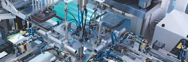

Tecnico en procesos industriales
Descripción
Técnicos en Procesos Industriales adquirirán las competencias para fabricar productos metalmecánicos utilizando los nuevos procesos y formas de producción así como la capacidad de operar máquinas herramientas convencionales programar máquinas herramientas de control numérico computarizado la aplicación del control estadístico de la calidad del producto la gestión de los procesos de manufactura el diseño mecánico asistido por computadora la operación de instrumentos de medición y calibración digitales y el manejo de los sistemas de automatización industriales
Perfil de Ingreso
Conocimientos
Emplea diferentes lenguajes para la comunicación; gráficos verbal y simbólico
Conocimientos básicos en ciencias exactas (matemáticas) y en ciencias físicas (física y química)
Habilidades
Habilidad para el estudio independiente
Organiza discrimina y selecciona información nueva
Destreza manual para el manejo de pequeños objetos herramientas o instrumentos de medición muy precisos
Uso de las tecnologías de la información
Actitudes
Interés para la investigación
Disposición para el trabajo individual y en equipo
Propone solución a problemas
Mantiene una actitud respetuosa
Perfil de Egreso
Competencias Genéricas
Enfrenta las dificultades que se le presentan y es consciente de sus valores fortalezas y debilidades
Identifica sus emociones las maneja de manera constructiva y reconoce la necesidad de solicitar apoyo ante una situación que lo rebase
Valora el arte como manifestación de la belleza y expresión de ideas sensaciones y emociones
Propone maneras de solucionar un problema o desarrollar un proyecto en equipo definiendo un curso de acción con pasos específicos
Asume una actitud que favorece la solución de problemas ambientales en los ámbitos local nacional e internacional
Competencias Profesionales
Organiza los procesos de fabricación de piezas metal mecánicas
Maneja instrumentos y equipos de medición conforme a normatividad
Diseña elementos mecánicos con software especializado
Mecaniza materiales férricos y no férricos de acuerdo al diseño
Opera equipos para la automatización de procesos
Requisito
Para ingresar al Nivel Medio Superior del Instituto Politécnico Nacional (IPN) el aspirante deberá cumplir con los requisitos que establece el concurso de asignación de la Comisión Metropolitana de Instituciones Públicas de Educación Media Superior (COMIPEMS) Una vez publicados los resultados el alumno deberá concluir el proceso de inscripción tal como lo menciona la convocatoria Para mayor información consultar la página web:COMIPEMS